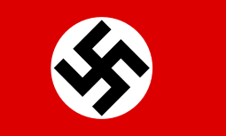

General Dwight D Eisenhower
Air Chief Marshal Sir Arthur Tedder
Field Marshal Bernard Montgomery
General Miles Dempsey
Air Chief Marshall Traffor Leigh-Mallory
Admiral Bertram Ramsay
Generalfeldmarschall Gerd von Rundstedt 
Generalfeldmarschall Erwin Rommel
Generalfeldmarschall Hugo Sperrle
Großadmiral Karl Dönitz
General der Panzertruppe Leo Geyr von Schweppenburg
Generaloberst Friedrich Dollmann
Generaloberst Hans von Salmuth
Lieutenant general Wilhelm Falley